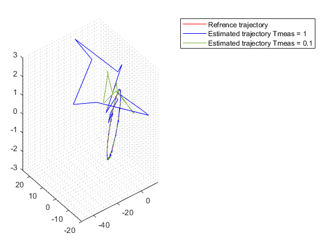
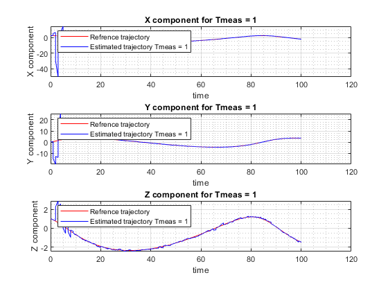
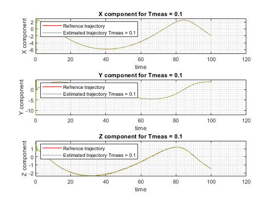

Contents
AEROSP584 Final Project Q1 Sukruthi Chidananda
clear all;
clc;
load AE584_Final_P1_pos_Ts_0_01.mat
load AE584_Final_P1_meas_Ts_0_01.mat
Given Data
R = eye(3);
Q = eye(6);
meu = 0.4;
x_hat_0 = [2.5 0 1 0 0.5 -0.1]';
p0_0 = eye(6);
Ts = 0.01;
Tmeas1 = 1;
Tmeas2 = 0.1;
x_k = x_hat_0;
x_k2 = x_hat_0;
Pk_k = p0_0;
d1 = [];
d2 = [];
temp_ck = [];
tempA = [];
time1 = [];
time2 = [];
For Tmeas = 1
for t1 = 1:10001
time1 = [time1 t1*Ts];
w1k = [randn(1);randn(1);randn(1)];
w2k = [randn(1);randn(1);randn(1)];
o = [zeros(3) ; 0.01*eye(3)];
gxk = [Range(t1);Azimuth(t1);Elevation(t1)];
tip=mod((t1*Ts),Tmeas1);
if(tip==0)
ck = c_k(x_k(1),x_k(2),x_k(3));
Yk = gxk + 0.01*eye(3)*w2k;
temp_ck = [temp_ck ;ck];
else
ck=zeros(3,6);
Yk = zeros(3,1);
end
l1 = gxyz(meu,x_k(1),x_k(2),x_k(3));
l2 = g_xyz(l1);
A = expm(l2*Ts);
Pk1_k = A*Pk_k*A'+Q;
Kk = Pk1_k*ck'*inv(ck*Pk1_k*ck'+R);
Pk1_k1 = Pk1_k - (Kk*ck*Pk1_k);
Pk_k = Pk1_k1;
x_k11 = A*x_k;
Gt = g(x_k11(1),x_k11(2),x_k11(3));
x_k11k1 = x_k11 + (Kk*(Yk-Gt));
x_k = x_k11k1;
d1 = [d1 x_k];
end
For Tmeas = 0.1
for t2 = 1:10001
time2 = [time2 t2*Ts];
w1k = [randn(1);randn(1);randn(1)];
w2k = [randn(1);randn(1);randn(1)];
o = [zeros(3) ; 0.01*eye(3)];
gxk = [Range(t2);Azimuth(t2);Elevation(t2)];
tip=mod((t2*Ts),Tmeas2);
if(tip==0)
ck = c_k(x_k2(1),x_k2(2),x_k2(3));
Yk = gxk + 0.01*eye(3)*w2k;
temp_ck = [temp_ck ;ck];
else
ck=zeros(3,6);
Yk = zeros(3,1);
end
l1 = gxyz(meu,x_k2(1),x_k2(2),x_k2(3));
l2 = g_xyz(l1);
A = expm(l2*Ts);
Pk1_k = A*Pk_k*A'+Q;
Kk = Pk1_k*ck'*inv(ck*Pk1_k*ck'+R);
Pk1_k1 = Pk1_k - (Kk*ck*Pk1_k);
Pk_k = Pk1_k1;
x_k11 = A*x_k2;
Gt = g(x_k11(1),x_k11(2),x_k11(3));
x_k11k1 = x_k11 + (Kk*(Yk-Gt));
x_k2 = x_k11k1;
d2 = [d2 x_k2];
end
Plots
figure(1)
plot3(Xref(1,:),Yref(1,:),Zref(1,:),'Displayname','Refrence trajectory','Color','r');
grid minor;
hold on;
plot3(d1(1,:),d1(2,:),d1(3,:),'Displayname','Estimated trajectory Tmeas = 1','Color','b');
plot3(d2(1,:),d2(2,:),d2(3,:),'Displayname','Estimated trajectory Tmeas = 0.1','Color',[0.4660, 0.6740, 0.1880]);
legend
hold off;
figure(2)
subplot(3,1,1)
plot(time1,Xref(1,:),'DisplayName','Refrence trajectory','Color','r');
hold on;
grid minor;
grid on;
plot(time1,d1(1,:),'DisplayName','Estimated trajectory Tmeas = 1','Color','b');
title('X component for Tmeas = 1')
xlabel('time');
ylabel('X component');
legend('Location','northwest');
hold off;
subplot(3,1,2)
plot(time1,Yref(1,:),'DisplayName','Refrence trajectory','Color','r');
hold on;
grid minor;
grid on;
plot(time1,d1(2,:),'DisplayName','Estimated trajectory Tmeas = 1','Color','b');
title('Y component for Tmeas = 1')
xlabel('time');
ylabel('Y component');
legend('Location','northwest');
hold off;
subplot(3,1,3)
plot(time1,Zref(1,:),'DisplayName','Refrence trajectory','Color','r');
hold on;
grid minor;
grid on;
plot(time1,d1(3,:),'DisplayName','Estimated trajectory Tmeas = 1','Color','b');
title('Z component for Tmeas = 1')
xlabel('time');
ylabel('Z component');
legend('Location','northwest');
hold off;
figure(3)
subplot(3,1,1)
plot(time2,Xref(1,:),'DisplayName','Refrence trajectory','Color','r');
hold on;
grid minor;
grid on;
plot(time2,d2(1,:),'DisplayName','Estimated trajectory Tmeas = 0.1','Color',[0.4660, 0.6740, 0.1880]);
title('X component for Tmeas = 0.1')
xlabel('time');
ylabel('X component');
legend('Location','northwest');
hold off;
subplot(3,1,2)
plot(time2,Yref(1,:),'DisplayName','Refrence trajectory','Color','r');
hold on;
grid minor;
grid on;
plot(time2,d2(2,:),'DisplayName','Estimated trajectory Tmeas = 0.1','Color',[0.4660, 0.6740, 0.1880]);
title('Y component for Tmeas = 0.1')
xlabel('time');
ylabel('Y component');
legend('Location','northwest');
hold off;
subplot(3,1,3)
plot(time2,Zref(1,:),'DisplayName','Refrence trajectory','Color','r');
hold on;
grid minor;
grid on;
plot(time2,d2(3,:),'DisplayName','Estimated trajectory Tmeas = 0.1','Color',[0.4660, 0.6740, 0.1880]);
title('Z component for Tmeas = 0.1')
xlabel('time');
ylabel('Z component');
legend('Location','northwest');
hold off;
  
Functions
function f_xyz = gxyz(mu,x,y,z)
r=sqrt(x^2+y^2+z^2);
x11 = ((3*(mu*x*x))/r^5)-(mu/(r^3));
x12 = (3*mu*x*y)/r^5;
x13 = (3*mu*x*z)/r^5;
x21 = (3*mu*x*y)/r^5;
x22 = ((3*(mu*y*y))/r^5)-(mu/(r^3));
x23 = (3*mu*y*z)/r^5;
x31 = (3*mu*x*z)/r^5;
x32 = (3*mu*y*z)/r^5;
x33 = ((3*(mu*z*z))/r^5)-(mu/(r^3));
f_xyz = [x11 x12 x13;x21 x22 x23;x31 x32 x33];
end
function f_xk = g_xyz(f1)
f_xk=[zeros(3) eye(3);f1 zeros(3)];
end
function AzOut = AzUnwrap(Az, clearVar)
persistent kwrap
persistent prevAz
if clearVar == 1
kwrap = [];
prevAz = [];
return
end
if isempty(kwrap)
kwrap = 0;
prevAz = -1.5708;
end
if ((Az + 2*kwrap*pi) - prevAz <= -pi)
kwrap = kwrap + 1;
elseif ((Az + 2*kwrap*pi) - prevAz >= pi)
kwrap = kwrap - 1;
end
AzOut = Az + 2*kwrap*pi;
prevAz = AzOut;
end
function g_xk = g(x,y,z)
a1 = sqrt(x^2+y^2+z^2);
a2 = -atan2(x,y);
w2 = AzUnwrap(a2,0);
a3 = atan2(z,(sqrt(x^2+y^2)));
g_xk = [a1;w2;a3];
end
function Ck = c_k(x,y,z)
r=(x^2+y^2+z^2);
x11 = x/sqrt(x^2+y^2+z^2);
x12 = y/sqrt(x^2+y^2+z^2);
x13 = z/sqrt(x^2+y^2+z^2);
x14 = 0;
x15 = 0;
x16 = 0;
x21 = (-y/(x^2+y^2));
x22 = (x/(x^2+y^2));
x23 = 0;
x24 = 0;
x25 = 0;
x26 = 0;
x31 = -x*z/(r*sqrt(x^2+y^2));
x32 = -y*z/(r*sqrt(x^2+y^2));
x33 = (x^2+y^2)/(r*sqrt(x^2+y^2));
x34 = 0;
x35 = 0;
x36 = 0;
Ck = [x11 x12 x13 x14 x15 x16;
x21 x22 x23 x24 x25 x26;
x31 x32 x33 x34 x35 x36];
end